Contents
Test for same parameters
clear all
close all
Parameters
iter = 200;
K = 2;
sigmaG = 1;
tau = 0.2;
alpha = 0.2;
beta = 1e-3;
Name = {'mdn4_w', 'cameraman', 'fingerprint1', 'lena'};
Std_n = {10, 15, 20, 25};
for i=1:4
for j=1:4
name_img = Name{i};
std_n = Std_n{j};
load (['NLE_image/' name_img '-In-' num2str(std_n) ])
[NLE, u_pde, O_flat, Count] = NLPM_NLE_C2(In, iter, K, sigmaG, tau, alpha, beta);
dif_noise = std_n - NLE;
disp([name_img ' ' num2str(std_n) ' ' num2str(dif_noise)]);
end
end
mdn4_w 10 0.13186
mdn4_w 15 0.12807
mdn4_w 20 0.12322
mdn4_w 25 -0.16711
cameraman 10 -3.2576
cameraman 15 -2.1867
cameraman 20 -1.6475
cameraman 25 -1.0072
fingerprint1 10 -0.91019
fingerprint1 15 -0.18503
fingerprint1 20 0.23349
fingerprint1 25 0.82637
lena 10 -2.4046
lena 15 -1.4466
lena 20 -0.87476
lena 25 -0.3558
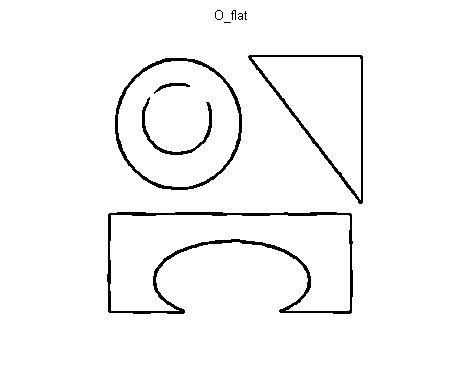 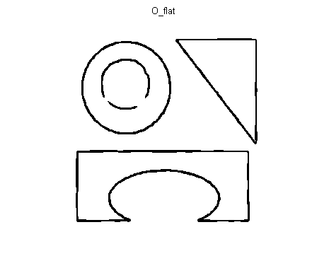 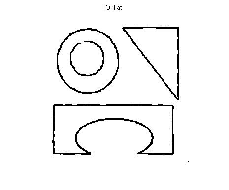 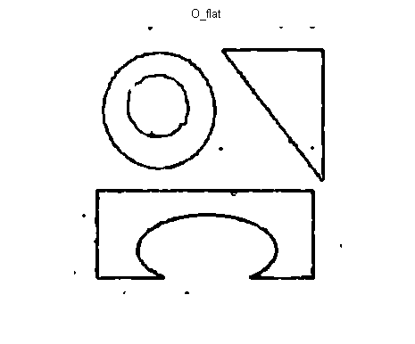 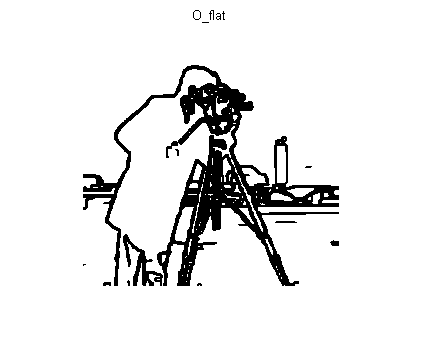 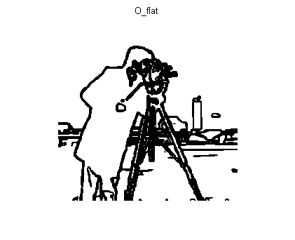 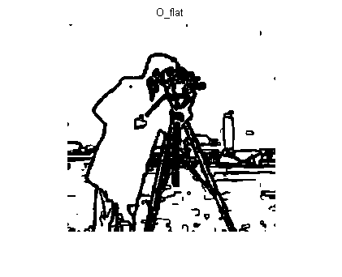 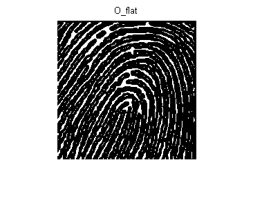 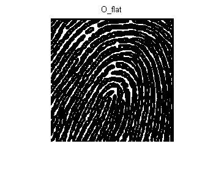 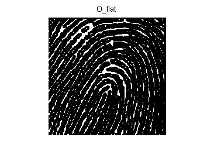 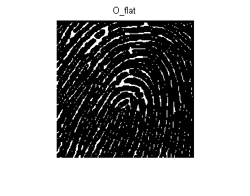 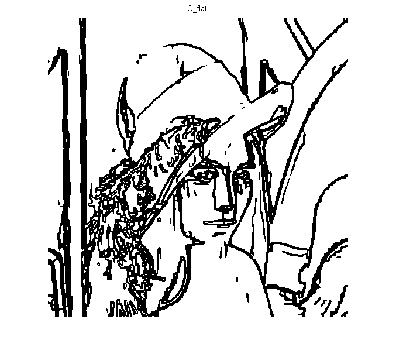 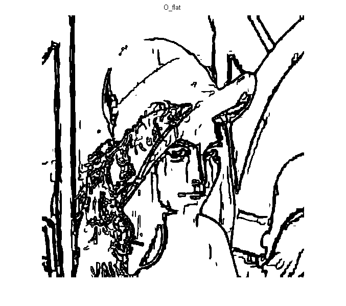 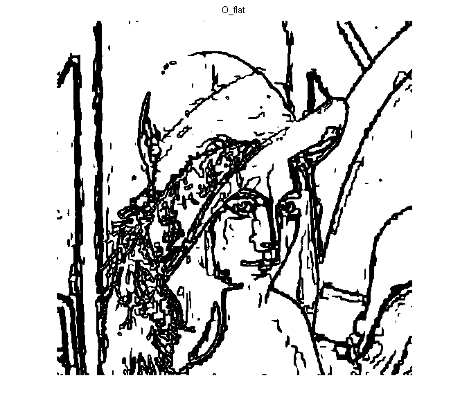